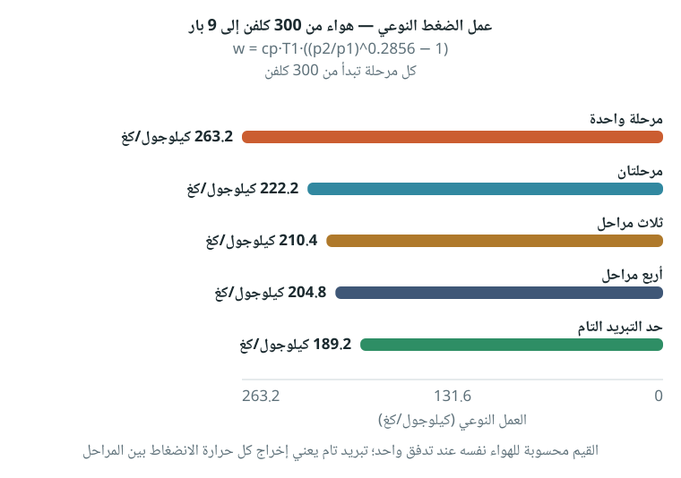

التبريد البيني بين مراحل الضغط يوفّر 15.6% من العمل
Intercooling between compressor stages
التبريد البيني يبرّد الغاز بين مرحلتي الضغط فتبدأ المرحلة التالية باردة، فيقلّ العمل النوعي. في ضغط الهواء حتى 9 بار يهبط العمل من 263.2 إلى 222.2 كيلوجول/كغ.
ضاغط يرفع ضغط الهواء من 1 بار إلى 9 بار في مرحلة واحدة يخرج هواءً بحرارة 561.9 كلفن. هذا التسخين ليس أثرًا للاحتراق، بل نتيجة مباشرة للعمل الميكانيكي الذي دخل الغاز. التبريد البيني (intercooling) يضع مبادلًا حراريًّا بين مرحلتين: يُبرّد الغاز بعد المرحلة الأولى إلى ما يقارب حرارة الدخول، فتبدأ المرحلة الثانية من نقطة باردة وتحتاج عملًا أقل للضغط نفسه.
المثال نفسه عند 9 بار: مرحلة واحدة تحتاج 263.2 كيلوجول/كغ، ومرحلتان متساويتا النسبة تحتاجان 222.2، أي توفير 15.6%. والفائدة لا تنمو خطيًّا مع عدد المراحل؛ المرحلة الثالثة تضيف 11.8 كيلوجول/كغ من التوفير، والرابعة 5.6 فقط، لأن العمل يقترب من حد التبريد التام 189.2 كيلوجول/كغ الذي لا يُبلَغ.
كيف تعمل الظاهرة؟
الضغط الأيزونتروبي يرفع الحرارة لأن العمل المبذول يدخل الطاقة الداخلية للغاز ولا يجد منفذًا للخروج: T2 = T1·(p2/p1)^0.2856. وكل زيادة في الضغط تُضاف على غاز أسخن، فيرتفع العمل النوعي لأن الحجم النوعي عند دخول المرحلة يكون أكبر. تبريد الغاز بين المرحلتين يعيد الحجم النوعي إلى قيمته الأولى قبل بدء الانضغاط الثاني، فيصير مسار العمل على مخطط p–v مكسورًا إلى قطعتين أقرب إلى الخط الأيزوثرمال من قطعة أدياباتية واحدة، والمساحة تحت المسار هي العمل.
العلاقة بالأرقام
العمل النوعي لمرحلة واحدة: w = cp·T1·((p2/p1)^((k−1)/k) − 1). للهواء cp = 1.005 كيلوجول/(كغ·كلفن) وk = 1.4 وT1 = 300 كلفن. حتى 9 بار: 263.2 كيلوجول/كغ وحرارة خروج 561.9 كلفن. مرحلتان بنسبة 3 لكل مرحلة وتبريد كامل إلى 300 كلفن: 222.2. ثلاث مراحل: 210.4. أربع: 204.8. وحد التبريد التام عند 300 كلفن R·T·ln(9) = 189.2، فسقف التوفير 28.1%. وبكفاءة أيزونتروبية 0.80 تصير القدرة لتدفق 1 كغ/ث 329.0 كيلوواط بمرحلة واحدة و277.8 كيلوواط بمرحلتين.
مفاهيم متقاربة
التبريد البيني ليس التبريد اللاحق: اللاحق يجري بعد آخر مرحلة وقبل الشبكة، ولا يغيّر العمل المستهلك لأن الضغط انتهى. وهو ليس استرداد حرارة اقتصادًا للوقود: الحرارة المسحوبة في المبادل البيني تُطرح إلى وسط تبريد أو تُستعمل للتدفئة، لكن فائدته المباشرة إسقاط عمل الضغط لا زيادة كتلة الهواء المدفوعة. كذلك ليس حقن ماء بين المراحل، فالحقن يبرّد بالتبخير ويضيف كتلة ويغيّر التكوين، أما التبريد البيني فيسحب حرارة فقط.
حدود التطبيق
الحساب يفترض تبريدًا تامًّا إلى 300 كلفن، والمبادل الحقيقي يقترب من ذلك بفارق 5 إلى 10 كلفن، فتنخفض الفائدة بمقدار ما يبقى من حرارة. ويُهمل هبوط الضغط في المبادل نفسه وهو يأكل جزءًا من التوفير. ويُفترض cp ثابتًا وk = 1.4، وهو تقريب مقبول للهواء تحت 500 كلفن ويسوء فوقها. وفي المنشآت الحقيقية نادرًا ما يُبرَّر أكثر من مرحلتين أو ثلاث، لأن كلفة المرحلة الإضافية وصيانتها تُقاس مقابل 5.6 كيلوجول/كغ فقط بين المرحلتين الثالثة والرابعة، ويُضاف إلى ذلك الحاجة إلى تصريف المتكاثف قبل دخول المرحلة التالية.

| الكمية | القيمة | المصدر |
|---|---|---|
| الحرارة النوعية للهواء عند 300 كلفن | 1.005 kJ/(kg·K) | [1] |
| نسبة الحرارة النوعية للهواء cp/cv | 1.4 بلا بُعد | [1] |
| أس العمل الأيزونتروبي (k−1)/k | 0.2856 بلا بُعد | [2] |
| عمل مرحلة واحدة حتى 9 بار | 263.2 kJ/kg | [2] |
| عمل مرحلتين بتبريد بيني كامل | 222.2 kJ/kg | [2] |
| التوفير من التبريد البيني بمرحلتين | 15.6 % | [2] |
| حرارة الخروج لمرحلة واحدة عند 9 بار | 561.9 K | [2] |
| حد العمل بتبريد تام (أيزوثرمال عند 300 كلفن) | 189.2 kJ/kg | [2] |
المصادر
- 1 Air - Specific Heat vs. Temperature and Pressure — Engineering ToolBox. www.engineeringtoolbox.com/air-specific-heat-capacity-d_705.html · اطُّلع عليه 2026-11-20
- 2 Compression and Expansion of Gases — isothermal and isentropic processes — Engineering ToolBox. www.engineeringtoolbox.com/compression-expansion-gases-d_605.html · اطُّلع عليه 2026-11-20
استشهد بهذا المصطلح
الصيغتان مبنيتان من بيانات الصفحة نفسها: العنوان والتاريخ ورابط النسخة المنشورة.
التبريد البيني بين مراحل الضغط يوفّر 15.6% من العمل — Intercooling between compressor stages. (2026). ديوان المعرفة — انفراد. https://infiradev.com/diwan/terms/compressor-intercooling.html
@misc{compressor-intercooling2026,
title = {التبريد البيني بين مراحل الضغط يوفّر 15.6% من العمل},
titleaddon = {Intercooling between compressor stages},
howpublished = {{ديوان المعرفة — انفراد} — مرجع علمي عربي},
year = {2026},
url = {https://infiradev.com/diwan/terms/compressor-intercooling.html},
urldate = {2026-11-21},
note = {مراجعة علمية: عبدالله الهويدي — مراجعة في تطبيق انفراد}
}
راجعه: عبدالله الهويدي — مراجعة في تطبيق انفراد · 2026-11-21 · آخر تحديث 2026-11-21